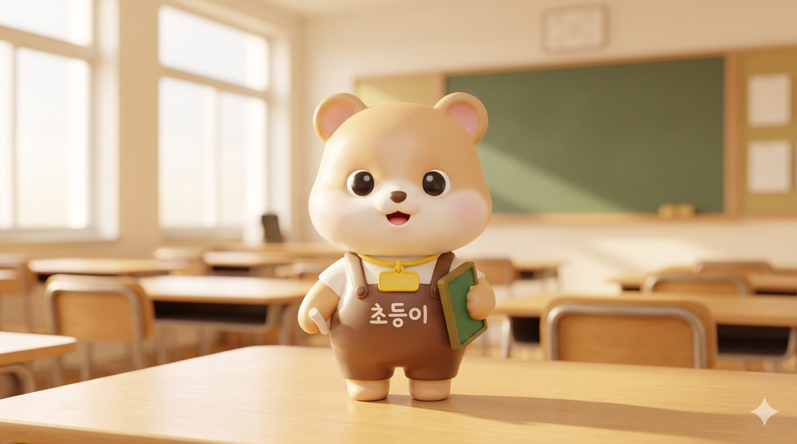

MODULE 1 · 몰입
약 15분
수업 마스코트 만들기
첫 단추는 '우리 수업의 얼굴'입니다. Gemini 이미지로 학급·수업 마스코트를 만들어, 오늘 만들 모든 자료(진단 폼·가정통신문·엽서)에 일관된 캐릭터로 넣습니다.
역량 — AI·디지털 기술의 윤리적 활용(생성 이미지의 초상·저작권 유의)
오늘 만들 마스코트
초등 우리 반 마스코트 — 친근한 동물 캐릭터로. 학급 안내·칭찬판·가정통신문에 두루 씁니다.
중등 교과 캐릭터 — 내 과목을 상징하는 마스코트로. 수업 슬라이드·형성평가에 씁니다.
고등 프로젝트·동아리 엠블럼 — 탐구 프로젝트나 동아리의 상징으로.
🧭 맥락 TIP 이미지도 맥락이 결과를 바꿉니다. 어디에 쓸지(가정통신문 머리글, 슬라이드 모서리, 폼 상단 등)와 누가 볼지(학생·학부모)를 먼저 말해 주면 구도와 배경이 그에 맞게 나옵니다.
실습 · 이미지 프롬프트
왼쪽에서 고르면 오른쪽 프롬프트가 바로 바뀝니다. 마음에 드는 조합이 되면 복사해 Gemini(이미지 생성)에 붙여넣으세요.

예시 결과물 동물 곰 · 스타일 피규어 · 의상 교사 앞치마 · 소품 작은 칠판과 분필, 목에 건 이름표 · 배경 밝은 교실 · 학급 표시 초등이
왼쪽에서 같은 조합을 골라 보세요. 결과는 생성할 때마다 조금씩 달라집니다.
사진으로 만들고 싶다면 본인 사진을 첨부하고 맨 앞에 "첨부한 사진 속 인물을 마스코트로 만들어 주세요. 얼굴의 이목구비 배치·눈·코·입 비율과 헤어스타일은 사진 그대로 유지하고, 없는 안경·주름은 그리지 마세요."를 덧붙이면 닮은 캐릭터가 나옵니다.
윤리 체크 학생·타인의 사진으로 생성할 때는 본인(보호자) 동의를 받으세요. 생성 이미지는 교육 목적으로 쓰되, 실제 인물로 오인될 표현은 피합니다.
💡 TIP 한 번에 하나만 고치기 — "표정만 웃게", "배경은 흰색으로"처럼 수정 요청은 한 가지씩 하세요. 여러 개를 섞으면 마음에 들던 부분까지 바뀝니다.
💡 TIP 같은 캐릭터 유지하기 — 마음에 드는 결과가 나오면 그 이미지를 첨부하고 "이 캐릭터와 같은 캐릭터로, ○○ 포즈를 해 줘"라고 요청하세요.
💡 TIP 리버스 프롬프트로 저장 — 마음에 든 이미지를 첨부하고 "이 이미지를 만들려면 어떤 프롬프트가 필요했을까?"라고 물어 두면, 다음에 비슷한 캐릭터를 다시 만들 수 있습니다. (프롬프트 탭 참고)
💡 TIP 초상·저작권 — 실존 인물이나 기존 캐릭터를 닮게 만들지 않고, 학생·타인 사진은 동의를 받은 뒤 사용합니다.
📤 내 결과물을 와우아이디어스에 옮기기
이번 모듈에서 만든 마스코트 이미지와 사용한 이미지 프롬프트를 와우아이디어스 워크스페이스에 정리해 두세요.
🔗 와우아이디어스 열기